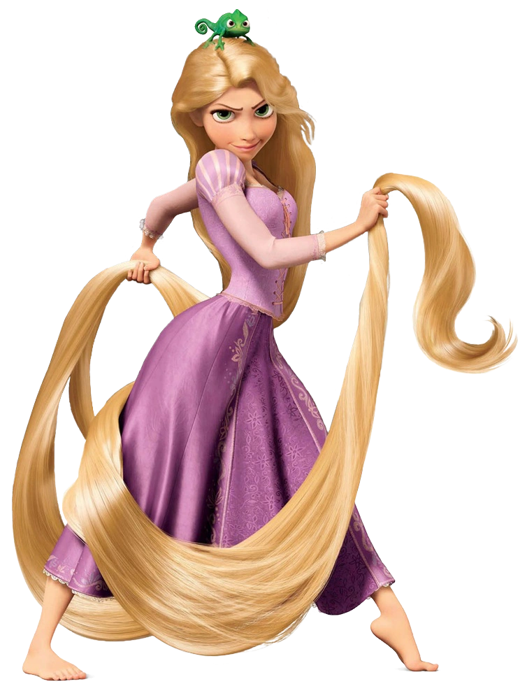

Agora use a barra de rolagem para chegar ao final desta página.
A Walt Disney Pictures apresenta Enrolados, uma comédia de animação musical com muita ação sobre uma menina com mágicos cabelos dourados de mais de 21 metros de comprimento. Rapunzel, a princesa que foi raptada do castelo de seus pais quando bebê (voz de Mandy Moore) é mantida presa em uma torre e sonha com aventuras. Agora uma adolescente determinada e criativa, ela realiza uma fuga de arrepiar os cabelos com ajuda de um ousado bandido (voz de Zachary Levi). Com o segredo de sua linhagem pesando na balança e seu captor em seu encalço, Rapunzel e seu amigo encontram aventura, emoção, humor e cabelos... muitos cabelos. Com exibição em 3D.
